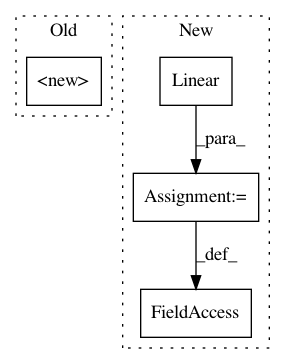

fc8951bbd36b14099e41fe171ab57e9f3937fe4f,models/wgan.py,LayerNorm,__init__,#LayerNorm#Any#Any#,7
Before Change
OUTPUT_DIM=64*64*3
class LayerNorm(nn.Module):
def __init__(self, features, eps=1e-5):
super().__init__()
self.gamma = nn.Parameter(torch.ones(features))
self.beta = nn.Parameter(torch.zeros(features))
self.eps = eps
After Change
super(ReLULayer, self).__init__()
self.n_in = n_in
self.n_out = n_out
self.linear = nn.Linear(n_in, n_out)
self.relu = nn.ReLU()
def forward(self, input):
output = self.linear(input)
In pattern: SUPERPATTERN
Frequency: 3
Non-data size: 4
Instances
Project Name: jalola/improved-wgan-pytorch
Commit Name: fc8951bbd36b14099e41fe171ab57e9f3937fe4f
Time: 2018-05-08
Author: waterstorm64@gmail.com
File Name: models/wgan.py
Class Name: LayerNorm
Method Name: __init__
Project Name: dmlc/dgl
Commit Name: a6b44e72b7d58bc07e1cc0a9fa9fe0413fba57a1
Time: 2020-08-11
Author: coin2028@hotmail.com
File Name: examples/pytorch/gcmc/model.py
Class Name: DenseBiDecoder
Method Name: __init__
Project Name: rusty1s/pytorch_geometric
Commit Name: 2dd4aa0abf65eb0793e007dacba8a32555a73345
Time: 2019-07-16
Author: matthias.fey@tu-dortmund.de
File Name: torch_geometric/nn/pool/edge_pool.py
Class Name: EdgePooling
Method Name: __init__